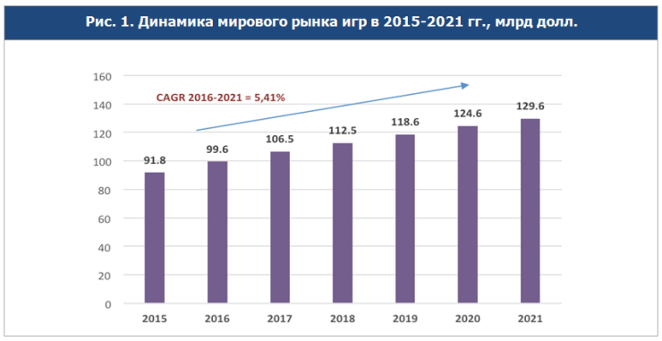

Во времена технического процесса и глобальной компьютеризации, влияние игровой индустрии на мировую экономику, является актуальной темой. В современном мире создание видеоигр является одним из наиболее крупных сегментов индустрии развлечений. Мировые игровые издательства в наше время превосходят в экономическом потенциале многие устоявшиеся корпорации, масштаб игровой индустрии сопоставим, например, с киноиндустрией. А по скорости роста за последние пятнадцать лет индустрия видеоигр существенно ее опережала.
По степени влияния на потребителей и вовлеченности их в интерактивное окружение, предлагаемое видеоиграми, этот сегмент уже давно выделяется среди других видов развлечений. Под индустрией компьютерных игр мы понимаем совокупность различных компаний, сообществ и отдельных личностей, а так же технологий и процессов, которые вместе образуют полный цикл производства. Так же это сектор экономики, который связан с разработкой, продажей и продвижением компьютерных игр, что позволяет работать в этой области огромному количеству людей с самыми различными специальностями от гейм-дизайнеров и художников до программистов и менеджеров. Геймдев или разработку игр невозможно рассматривать обособленно от индустрии компьютерных игр в целом. Непосредственно создание игр – это только часть комплексной «экосистемы», обеспечивающей полный жизненный цикл производства, распространения и потребления таких сложных продуктов, как компьютерные игры. В структуре современной игровой индустрии можно выделить следующие уровни:
Аппаратно-программные системы, позволяющие запускать интерактивные игровые приложения. Среди основных видов можно выделить:
Программная прослойка между платформой и собственно кодом игры. Использование готового игрового движка позволяет существенно упростить разработку новых игр, удешевить их производство и существенно сократить время до запуска. Также современные игровые движки обеспечивают кроссплатформенность создаваемых продуктов. Из наиболее продвинутых движков можно выделить: Unreal Engine, Source, Rage, Unity.
Большое количество компаний и независимых команд занимаются созданием компьютерных игр. В разработке участвует специалисты разных профессий: программисты, гейм-дизайнеры, художники, QA специалисты, менеджеры и др. К разработке крупных коммерческих игровых продуктов привлекаются большие профессиональные команды в 100+ специалистов. И стоить подобные проекты в разработке могут десятки миллионов долларов. Однако вполне успешные игровые проекты могут воплощаться и небольшими командами энтузиастов. Этому способствует присутствие на рынке большого количества открытых и распространенных платформ, качественные и практически бесплатные движки, площадки по привлечению «народных» инвестиций (краудфандинг) и доступные каналы распространения.
Распространением игр или оперированием (в случае с MMO) занимаются, как правило, не сами разработчики, а издатели. При этом издатели (или операторы) локализуют игры, взаимодействуют с владельцами платформ, проводят маркетинговые компании, разворачивают инфраструктуру, обеспечивают техническую и информационную поддержку выпускаемым играм. Для средних и небольших игровых продуктов данный уровень практически не доступен. Такие продукты, как правило, сами разработчики выводят на рынок, напрямую взаимодействуя с платформами.
Специализированные средства массовой информации всегда являлись мощным каналом донесения информации до пользователей. Сейчас наиболее эффективным и широко представленным направлением СМИ являются информационные сайты, посвященные игровой тематике. Игровые журналы, долгое время выступавшие главным источником информации об играх, в настоящее время уступили свое место интернет ресурсам. Специализированные выставки все еще остаются важным информационными площадками для игровой индустрии (E3, GDC, Gamescom, ИгроМир, КРИ, DevGamm) . Прямое общение прессы и игроков с разработчиками, обмен опытом между участниками рынка, новые контакты - вот то, что предлагают конференции и выставки в концентрированной форме. Еще один важный канал донесения полезной информации до игроков – это ТВ-передачи, идущие как в формате классического телевещания, так и на множестве каналов видео-контента.
Игроки – это основной источник прибыли для игровых продуктов. Но в современном мире наиболее активные игроки стали существенной движущей силой в популяризации игр и отчасти в расширении контента.
В рамках наиболее популярных игровых направлений, вокруг конкретных игр или серий образуются игровые сообщества, возникают новые сайты, форумы и группы в социальных сетях. Зачастую подобные группы генерируют даже больший поток информации, чем могут себе позволить разработчики и издатели через собственные ресурсы и рекламу. Достаточно типично, когда независимый сайт по игре предлагает посетителям более полную информацию по миру игры, по сравнению с официальным сайтом.
В настоящее время устройство на работу в игровой индустрии предоставляет большие возможности и перспективы для роста по следующим причинам:
В предыдущие пять лет игровая индустрия во всем мире переживает бурный рост. Рост наблюдался во всех сегментах, но основными драйверами в этот период стали мобильные игры на двух основных платформах iOS и Android.
В 2014 году Microsoft успешно приобрела студию Mojang и Minecraft соответственно у Маркуса Перссона (Нотча). Изначально это был независимый проект программиста-одиночки. Но по мере развития он завоевал армию поклонников. Будучи построенным на открытой технологии, он получил взрывной рост по наполнению и обошел по популярности всех остальные развлечения среди детей цифрового поколения. На осень 2014 года количество зарегистрированных игроков превысило 10 млн, причем это произошло абсолютно без привлечения рекламы. На весну 2021 года было продано более 238 миллионов копий на всех платформах, а 140 миллионов людей запускало игру хотя бы раз в месяц. Это и доказывает что майнкрафт - самая продаваемая и успешная игра во всей истории геймдева.
Покупка Facebook технологии Oculus VR за $2 млрд. Понятно, что технологию можно использовать во множестве областей и для различных задач, но для игровой индустрии – эта технология стала принципиальным прорывом для формирования нового VR направления. Также многие игровые студии продолжают разрабатывать игры с встроенной дополненной реальностью, например на мобильных устройствах. Развитие этих направлений обусловлено появлением новых устройств и развитием самих технологий. Большинство экспертов сходятся во мнении, что в ближайшее десятилетие они завоюют существенную часть рынка.
Игры заняли свою нишу в экономике стран, аккуратно распологая своими ресурсами. В настоящее время трудно представить нашу планету без различных компьютеров, игровых консолей и подобной техники. Возможно игровая индустрия не является определяющей в вопросах экономики, но она безусловно играют огромную роль в её вопросах. Объём мирового рынка представлен на рисунке. Можно обратить внимание, что игровой рынок занимает очень большую часть рынка и с каждым годом растёт только вверх. В настоящее время компьютерные игры вносят значительный вклад в мировую экономику ввиду большого успеха продаж  основных игровых систем и игр.
Последние исследования в секторе компьютерных игр выявили небывалые темпы роста объема рынка, который, по прогнозам специалистов, продолжится вплоть до 2022 года. Согласно предварительным заключениям, к этому сроку он составит почти $200 млрд, демонстрируя средние ежегодные темпы роста на уровне 7.4%. В период с 2013 по 2017 год существенно изменилась структура мирового рынка игр по сегментам. В 2013 году большая доля рынка приходилась на игровой ПК-рынок (почти 40%), а 37% занимал сегмент консолей. В 2016 и 2017 гг самым крупным становится сегмент мобильных игр, с годовым оборотом $36 млрд и $39 млрд соответственно, что составляет почти 40% от всего объема мирового рынка игр. В рассматриваемый период сегмент мобильных игр демонстрировал колоссальные темпы роста: для смартфонов показатель роста CAGR составил 28.4%, а для планшетов — 26.9%.
Создатель: Студент 11Ф/к Шайхетдинов Данил Феликсович
DeshGaming11@gmail.com
Ялта 2022